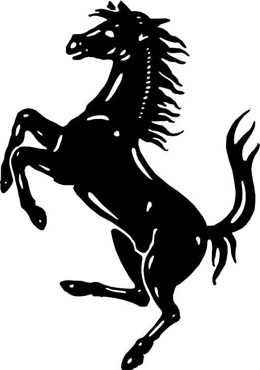

21 Century Formula One
2000 - 2006
"Michael Schumacher Years"
The Year 2000 was special for the Formula One team - Ferrari and all its fans around the world. After twenty years' failure of winning the Driver Championship, Ferrari gained this honor again in the Season 2000.
The hero was Michael Schumacher, who joined Ferrari from season 1996 and started his five-year championships from Season 2000.
Michael Schumacher and Team Ferrari's performances from season 2000 - 2006
During Season 2000 to 2004, Michael Schumacher and Team Ferrari won five driver and team championships, making Schumacher "The King of F1".
However, due to new rules and the failure of their development team to keep up with the competition, Ferrari failed to challenge teams like Renault in 2005 - 2006 period. In both seasons, Fernando Alonso won the companionships, after 2006 season, Schumacher chose to retire.
Hover the circles for more information.
Michael Schumacher's Record
There is no doubt that Michael Schumacher was one of the greatest Formula One drivers in the world. Although he has retired for several years, he still maintains serveral F1 records.
AfterMichael Schumacher Era. . . .(2007-2015)
This map shows the performance of Team Ferrari from Season 2000 to Season 2015.After Michael Schumacher retired from Ferrari in Season 2006, Ferrari won another world championship with their new driver: Kimi Raikkonen.However,Ferrari failed to come up with a competitive race car after Season 2007 and thus had fewer victories. Teams like Red Bull, Mercedes and Brawn GP passed them by. The map shows the decreasing dominance of Ferrari after Season 2007.
Australia
The Australian Grand Prix Corporation coined the phrase 'a great place for the race' and Melbourne is just that. The climate in late summer is perfect, the people are friendly and, to top it all, the Grand Prix is one of the most well organised of the year.
The Y axis shows the points the team got every year. The numbers on each chart shows how many points the team got in their last seasons.
No race data for this country.
Ferrari has waken
After several seasons' downturn, Ferrari went back to the second place of the team championship in 2015. Drivers of Ferrari also had outstanding performances in the beginning of the 2016 season.
For many people, Ferrari and Formula One racing have become inseparable. Ferrari is the only team which have competed for every season in the F1 history, it has grown from the humble dream of the founder Enzo Ferrari to one of the most iconic and recognised brands in the world.